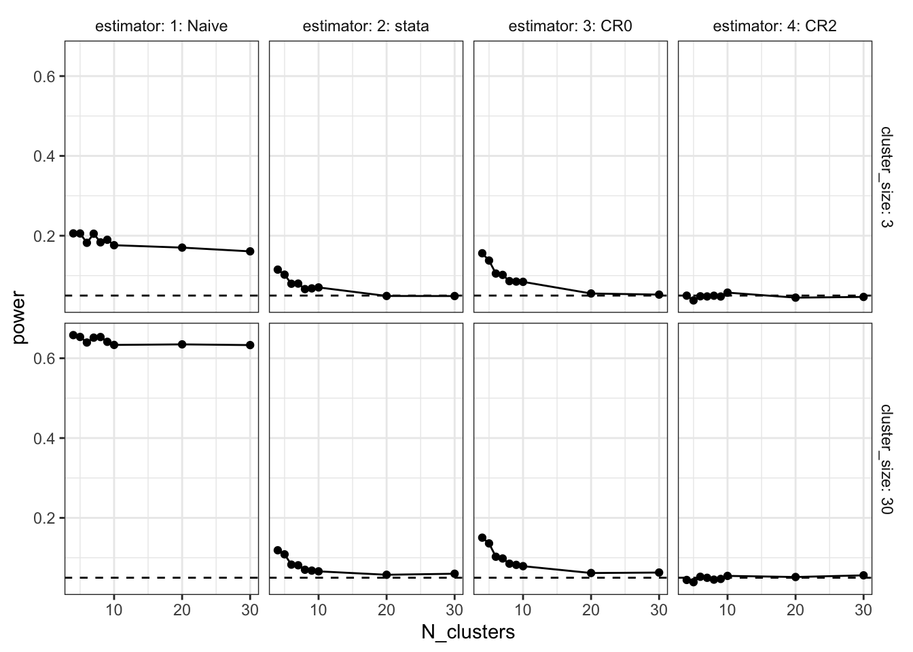
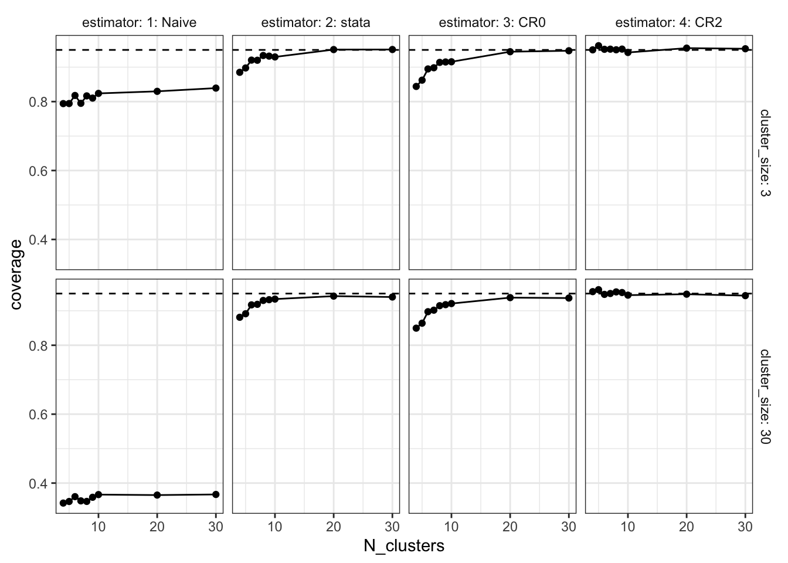

N_clusters <- 4
cluster_size <- 5
cluster_design <-
declare_model(
clusters = add_level(N = N_clusters, u_c = rnorm(N, sd = .707)),
units = add_level(
N = cluster_size,
u_i = rnorm(N, sd = .707),
potential_outcomes(Y ~ u_i + u_c))
) +
declare_inquiry(ATE = mean(Y_Z_1 - Y_Z_0)) +
# cluster assignment
declare_assignment(Z = cluster_ra(clusters = clusters)) +
declare_measurement(Y = reveal_outcomes(Y ~ Z)) +
# analysis, with different approaches to clustering
declare_estimator(Y ~ Z, model = lm_robust,
inquiry = "ATE", label = "1: Naive") +
declare_estimator(Y ~ Z, model = lm_robust, clusters = clusters,
se_type = "stata", inquiry = "ATE", label = "2: stata") +
declare_estimator(Y ~ Z, model = lm_robust, clusters = clusters,
se_type = "CR0", inquiry = "ATE", label = "3: CR0") +
declare_estimator(Y ~ Z, model = lm_robust, clusters = clusters,
se_type = "CR2", inquiry = "ATE", label = "4: CR2")Cluster-robust standard errors are known to behave badly with too few clusters. There is a great discussion of this issue by Berk Özler “Beware of studies with a small number of clusters” drawing on studies by Cameron, Gelbach, and Miller (2008). See also this nice post by Cyrus Samii and a recent treatment by Esarey and Menger (2018). A rule of thumb is to start worrying about sandwich estimators when the number of clusters goes below 40. But here we show that diagnosis of a canonical design suggests that some sandwich approaches fare quite well even with fewer than 10 clusters.
We’ll explore this question by looking at a range of cluster randomized trials. We do this by generating a base design which includes the number of clusters and the number of units per cluster as arguments and then using that design to make a sequence of designs that vary these arguments. In this design we draw separate errors at the individual and cluster levels so that outcomes are correlated within the clusters. Specifically, we assume a fairly large “intracluster correlation coefficient” (ICC) of 0.5. The design employs a range of different approaches for estimating standard errors from the estimatr package, alongside a naive approach that ignores the clusters entirely.1
Here’s the basic design:
We use the redesign function to make a sequence of related designs based on the base design.2 We’re especially interested in what happens at small numbers of clusters, since that’s where the trouble lies, so we will focus the sequence on the low end.
cluster_designs <- redesign(cluster_design,
N_clusters = c(4, 5, 6, 7, 8, 9, 10, 20, 30),
cluster_size = c(3, 30))We diagnose all of these in one go:
diagnosis <- diagnose_design(cluster_designs, sims = sims)Let’s now graph the output separately for the expected standard error, power, and coverage.
Standard Errors
Our first plot compares the true standard error (the standard deviation of the estimates themselves) to the expected standard error estimate. The blue points are the true standard errors at each sample size; they go down as the number of clusters increases. The red points are the average estimated standard errors. When the number of clusters is small, we see that the average estimate is too small: the standard error estimators are downwardly biased. This problem is extreme for the naive approach. It is still clearly an issue for “CR0” (a variant of cluster-robust standard errors that appears in R code that circulates online) and Stata’s default standard errors. We see though that it is not as severe for the CR2 standard errors (a variant that mirrors the standard HC2 robust standard errors formula). We’re using the adjustment described in Pustejovsky and Tipton (2018).
get_diagnosands(diagnosis) %>%
gather(diagnosand, value, sd_estimate, mean_se) %>%
ggplot(aes(N_clusters, value, group = diagnosand, color = diagnosand)) +
geom_point() + geom_line() +
theme(legend.position = "bottom", strip.background = element_blank()) +
facet_grid(cluster_size ~ estimator, labeller = label_both)
Power
In our data-generating process, the true ATE is exactly zero. Statistical power is the probability of getting a significant estimate. Since the true ATE is exactly zero, this probability should be exactly 0.05, as we’re using the standard significance threshold. Just as the analysis of the standard errors showed, when the number of clusters is small, we’re anticonservative. The naive approach is again wildly off, particularly when there are large clusters. But the clustered approaches also have problems. When the number of clusters is smaller than 10, the CR0 and Stata estimators are falsely rejecting at rates exceeding 10%.
get_diagnosands(diagnosis) %>%
ggplot(aes(N_clusters, power)) +
geom_point() + geom_line() +
geom_hline(yintercept = 0.05, linetype = "dashed") +
theme(strip.background = element_blank()) +
facet_grid(cluster_size ~ estimator, labeller = label_both)
Coverage
Coverage is the rate at which the estimated confidence intervals include the true value of the parameter. We’re estimating 95% confidence intervals, so if things are working as advertised, coverage would be 95%. But since at small numbers of clusters, we’re overconfident (the standard errors are too small), the coverage rates are well below the 95% target. Again though, CR2 performs quite well.
get_diagnosands(diagnosis) %>%
ggplot(aes(N_clusters, coverage)) +
geom_point() + geom_line() +
geom_hline(yintercept = 0.95, linetype = "dashed") +
theme(strip.background = element_blank()) +
facet_grid(cluster_size ~ estimator, labeller = label_both)
Take aways
We’re surprised just how well CR2 performs for this design. We see here very good performance for even small numbers of clusters and excellent performance once there are about 10 clusters. Can this be broken with a different data generating process—e.g. designs with non-normal errors or with unequal cluster sizes? We don’t know. We’d love to hear thoughts on when CR2 doesn’t do as well as CR0 or the Stata default.
A second takeaway: although it can be hard in the abstract to assess how few clusters is too few, declaring and diagnosing a design tailored to your application is not that hard and might give a better handle than rules of thumb for assessing the credibility of the standard errors you estimate given the type of data you have.
References
Cameron, A Colin, Jonah B Gelbach, and Douglas L Miller. 2008. “Bootstrap-Based Improvements for Inference with Clustered Errors.” The Review of Economics and Statistics 90 (3): 414–27.
Esarey, Justin, and Andrew Menger. 2018. “Practical and Effective Approaches to Dealing with Clustered Data.” Political Science Research and Methods, 1–19.
Pustejovsky, James E., and Elizabeth Tipton. 2018. “Small-Sample Methods for Cluster-Robust Variance Estimation and Hypothesis Testing in Fixed Effects Models.” Journal of Business & Economic Statistics 36 (4): 672–83. https://doi.org/10.1080/07350015.2016.1247004.
Footnotes
Big thanks to Luke Sonnet who played a huge role in developing this functionality in
estimatr.↩︎The
redesignfunction changes the values of arguments that are given explicitly in step declaration. See? redesignfor examples whereredesigndoes not change the values of arguments that are used by a design but not given explicitly when steps are declared.↩︎